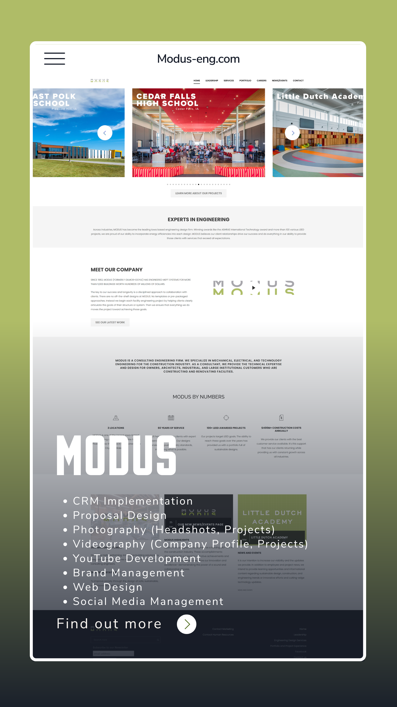
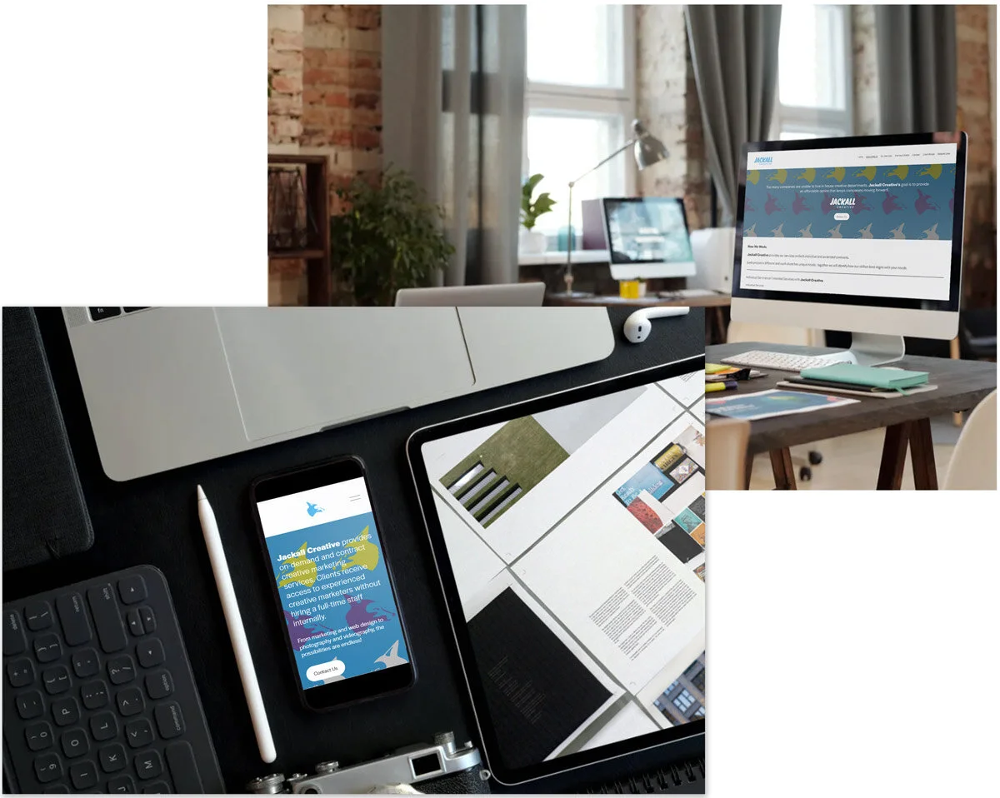

AI Readiness Agent
Audits tasks, tools, risks, and opportunities so AI adoption starts with a business map.
AI creative operations studio
Jackall Creative helps businesses move from AI curiosity to operating advantage: workflows, agents, AI-ready websites, content engines, brand intelligence, and visual work that actually ships.
Operating system
Inspired by modern AI product sites, this homepage now behaves like a product surface. Choose a mode and see what Jackall builds for the business behind the screen.
Highest leverage workflow
Jackall reviews your tools, repeated tasks, content needs, proof library, and risk areas, then ranks the first practical AI moves.

AI flywheel
The offer is not "here is a chatbot." It is a repeatable loop for making AI useful across marketing, operations, proposals, documents, and websites.
01 / Train
Brand voice, offers, customers, proof, FAQs, approvals, risk rules, and source material become the operating context.
Agent stack
Audits tasks, tools, risks, and opportunities so AI adoption starts with a business map.
Turns brand voice, proof, topics, and approvals into a repeatable marketing workflow.
Structures recurring sales documents, project descriptions, and proof points for better first drafts.
Rebuilds content architecture, search-friendly resources, and Cloudflare-ready static files.
Creative proof
Jackall already has a deep visual archive. The new site uses it as proof that the AI strategy connects to real creative production, not abstract consulting slides.
View the work archive


Build the first useful AI system